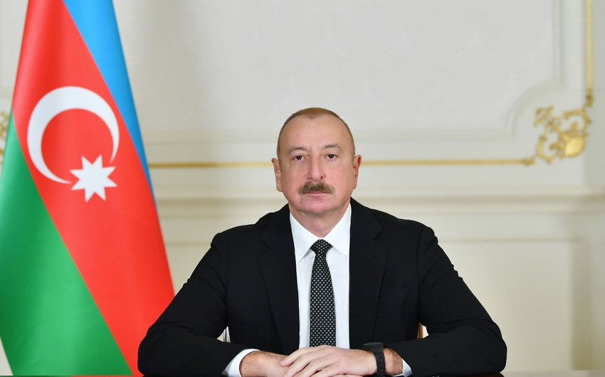
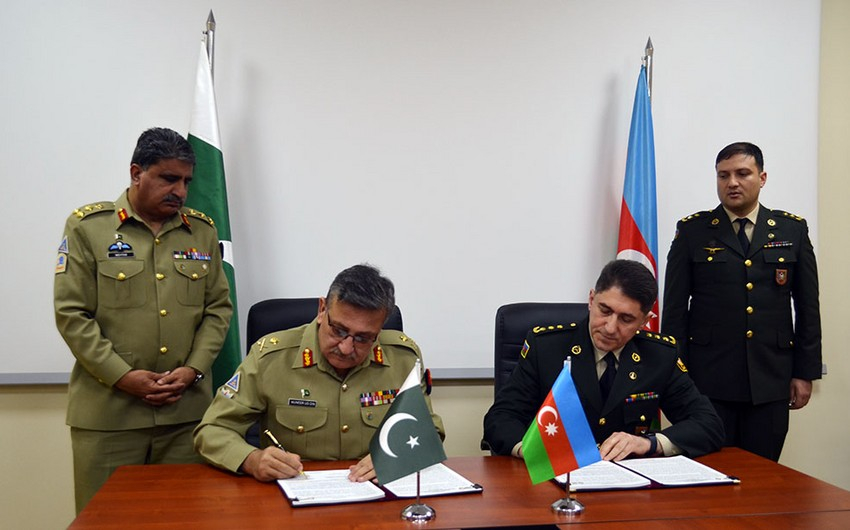
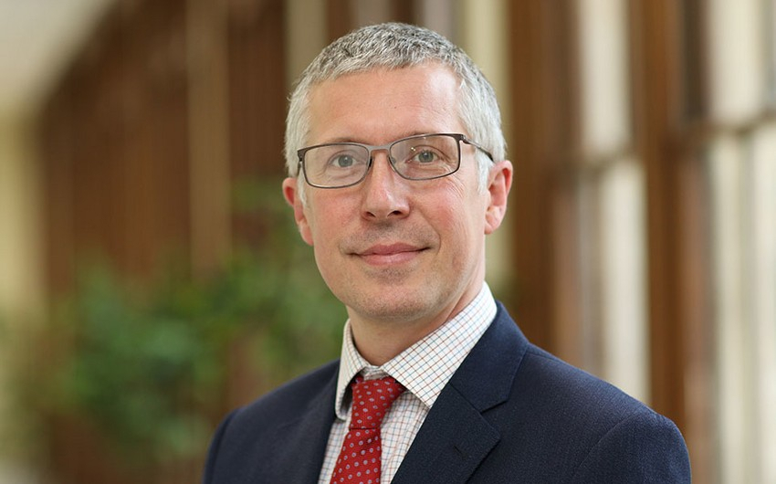

Kamboca Xalq Partiyasının sədri Azərbaycan Prezidentini təbrik edib
Kamboca Xalq Partiyasının sədri Hun Sen Azərbaycan Prezidenti İlham Əliyevə təbrik məktubu ünvanlayıb.
BAKU.WS xəbər verir ki, təbrikdə deyilir:
"Zati-aliləri.
Bu il fevralın 7-də keçirilmiş seçkilərdə yenidən Prezident seçilməyiniz münasibətilə Sizi təbrik etməkdən böyük şərəf duyuram. Seçkilərdə inamlı qələbəniz Azərbaycan xalqının Sizin müdrik liderliyinizə, xüsusilə də dövlətin idarə olunmasında və inkişafında zəngin təcrübənizə güclü etimadının və inamının bariz göstəricisidir.
Mən qəti şəkildə əminəm ki, Azərbaycan Respublikasının Sizin rəhbərliyinizlə inkişafı davam edəcək, ölkəniz regional və qlobal məsələlərdə daha böyük rol oynayacaq və bu da xalqınıza daha çox fayda gətirəcək.
Kamboca Xalq Partiyası ölkələrimiz arasında uzun müddətdir mövcud olan dostluq münasibətlərini bütün səviyyələrdə, xüsusilə də Qoşulmama Hərəkatı çərçivəsində, eləcə də digər ikitərəfli və çoxtərəfli formatlarda möhkəmləndirməyə və dərinləşdirməyə böyük önəm verir.
Cənab Prezident, yüksək ehtiramımı qəbul etməyinizi xahiş edirəm. Sizə möhkəm cansağlığı, xoşbəxtlik və məsul vəzifənizdə uğurlar arzulayıram".
Azərbaycan və Pakistan hərbçiləri birgə təlimlərin keçirilməsi barədə müzakirələr aparıb - FOTO
Azərbaycan və Pakistan hərbçiləri birgə təlimlərin keçirilməsi barədə müzakirələr aparıb.
Bu barədə BAKU.WS-ə Müdafiə Nazirliyindən məlumat verilib.
Qeyd edilib ki, Müdafiə Nazirliyinin Beynəlxalq Hərbi Əməkdaşlıq İdarəsində Azərbaycan Müdafiə Nazirliyi və Pakistan Birləşmiş Qərargahı arasında “10-cu Azərbaycan-Pakistan İşçi Qrupu Səviyyəli Görüşü” keçirilib
Görüşdə iki ölkə arasında hərbi əməkdaşlığın cari vəziyyəti və inkişaf perspektivləri, hərbi təhsil və elm, əməliyyat planlaşdırılması, birgə təlimlərin keçirilməsi və maraq doğuran digər mövzulara dair ətraflı fikir mübadiləsi aparılıb.
Görüşün yekun protokolu imzalandıqdan sonra qarşılıqlı hədiyyələr təqdim edilib, xatirə fotosu çəkdirilib.
Səfir: Azərbaycanın kifayət qədər mürəkkəb qonşuluğu var
Azərbaycanın kifayət qədər mürəkkəb qonşuluğu var.
Bunu BAKU.WS -ə açıqlamasında Böyük Britaniyanın Azərbaycandakı səfiri Fergus Auld deyib.
Səfir qeyd edib ki, bu baxımdan, digər sahələrdə olduğu kimi, hərbi sektorda da kibertəhlükəsizlik çox önəmlidir.
“Prezident İlham Əliyev də bildirib ki, kibertəhlükəsizlik Azərbaycan üçün əsas prioritetdir” - Fergus Auld deyib.
O bildirib ki, hazırda kibertəhlükəsizliklə mübarizə aparmaq üçün Azərbaycan tərəfindən lazımi addımlar atılır: “Böyük Britaniya tərəfindən ilk dəfə olaraq Azərbaycanda təşkil olunan kibertəhlükəsizlik sərgisində 4 aparıcı şirkətimiz təmsil olunur. Belə bir sərginin təşkil olunmasında məqsəd müxtəlif sahələrdə kibertəhlükəsizliklə mübarizədə Azərbaycana dəstək olmaqdır”.